CloudLens 소개
CloudLens는 AI로 Kubernetes·OpenStack 자원을 검색하고 애플리케이션의 장애 원인을 진단하는 웹 포털입니다. 직접 배포한 Qwen 모델로 자연어 요청을 처리하며, 로그 분석과 YAML 초안 작성도 지원합니다.
또 하나의 핵심은 애플리케이션 구성을 한눈에 보고 실행 인프라까지 추적하는 기능입니다. 앱에 연결된 네트워크·워크로드·저장소·GPU를 구성도로 확인하고, 실행 노드와 OpenStack VM까지 따라갈 수 있습니다. 같은 화면에서 사용량을 확인하고 자원을 관리하거나 터미널에 접속할 수 있습니다.
주요 기능
| 기능 | 사용자가 할 수 있는 일 |
|---|---|
| AI 채팅과 장애 진단 | 자연어로 자원과 관계를 검색하고, 앱의 장애 원인과 다음 행동을 질문합니다. |
| 통합 현황과 앱 추적 | 배포된 앱의 상태를 살펴보고, 앱 구성에서 실행 노드·VM까지 추적합니다. |
| 사용량·용량 대시보드 | 앱의 부하와 GPU 사용 현황을 보고, 호스트·저장소·클러스터에 남은 용량을 확인합니다. |
| Kubernetes 자원 관리 | 연결된 자원을 따라 탐색하고 생성·수정·삭제와 일괄 작업을 수행합니다. 요구사항을 입력해 AI로 YAML 초안을 작성할 수 있습니다. |
| OpenStack 자원 관리 | VM·이미지·볼륨·네트워크를 관리하고, 상세 화면에서 연결된 자원으로 이동합니다. |
| 로그 분석과 원격 접속 | 컨테이너 로그를 읽고 AI 분석을 요청하거나, Pod·VM에 직접 접속합니다. |
| 계정과 인프라 연결 관리 | 사용할 클러스터와 클라우드를 등록하고, 사용자별 작업 환경을 관리합니다. |
| AI 설정 | 사용할 모델과 연결 방식을 선택하고, 모델 한도를 설정하거나 연결을 테스트합니다. |
| AI 운영 관리 | 누가 어떤 기능에서 AI를 사용했는지 확인하고, 답변이 만들어진 과정과 사용자·모델별 입력·출력 토큰 사용량을 추적합니다. |
| 시스템 구조 | 화면·서버·저장소와 인프라 API가 연결되는 구성을 확인합니다. |
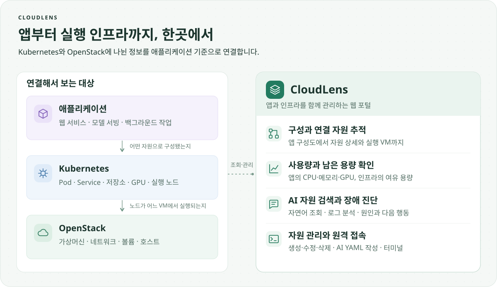
“이 PVC를 사용하는 자원 찾아줘”, “앱이 계속 죽는데 원인 찾아줘”처럼 운영 중 궁금한 내용을 바로 질문할 수 있게 했습니다. AI가 찾은 자원은 목록·상세·앱 구성도로 연결됩니다. 질문에서 시작해 실제 배포 구조와 사용량을 확인하고 필요한 작업까지 이어갈 수 있습니다.
AI 채팅과 장애 진단
메뉴에서 자원을 찾아 들어가는 대신 채팅으로 조회할 수 있습니다. “이름에 gpu가 들어간 VM 보여줘”처럼 대상과 조건을 말하면 질문을 조회 도구와 필터 조건으로 변환해 목록 카드를 보여줍니다. 결과를 선택하면 자원 상세가 열립니다. “이 PVC를 사용하는 자원 찾아줘”처럼 자원 사이의 관계를 묻거나 앱 구성을 요청할 수도 있습니다.
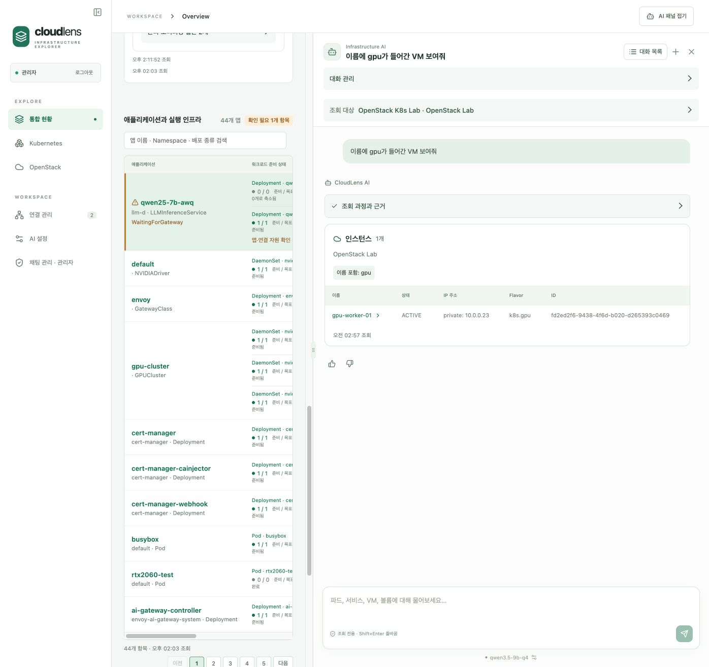
이름에 gpu가 포함된 VM을 조회한 결과입니다. 적용한 검색 조건과 자원을 함께 표시하고 상세 화면으로 연결합니다.
AI의 역할은 기능에 따라 다릅니다. 목록 검색에서는 조회 함수와 조건을 선택하고, 실제 목록과 필터 결과는 코드가 만듭니다. 앱 구성도 역시 자원에 기록된 참조를 코드로 연결합니다. 장애 진단과 로그 분석에서는 모델이 수집 자료를 읽고 원인과 다음 행동을 제안합니다.
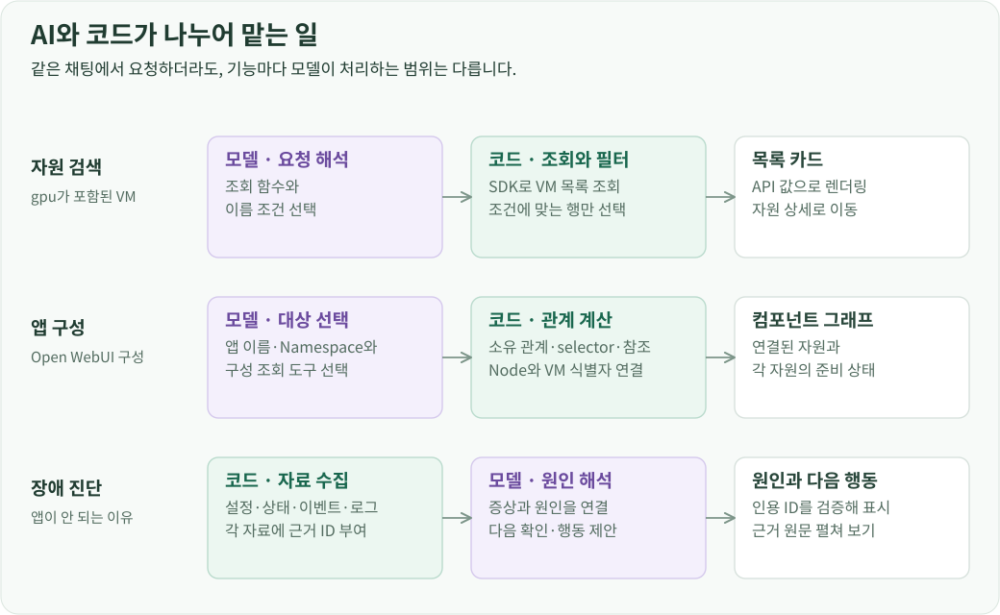
앱에 문제가 생기면 “crash-demo가 계속 죽는데 원인 찾아줘”처럼 질문합니다. 앱의 상태·이벤트·로그를 모아 진단하고, 관측된 증상과 원인 후보, 추천하는 다음 행동을 연결해 보여줍니다. 근거가 있는 판단과 추가 확인이 필요한 추정을 구분하고, 판단에 사용한 이벤트와 로그도 열어볼 수 있습니다. 이 진단은 통합 현황에서 문제가 있는 앱을 선택해도 사용할 수 있습니다.
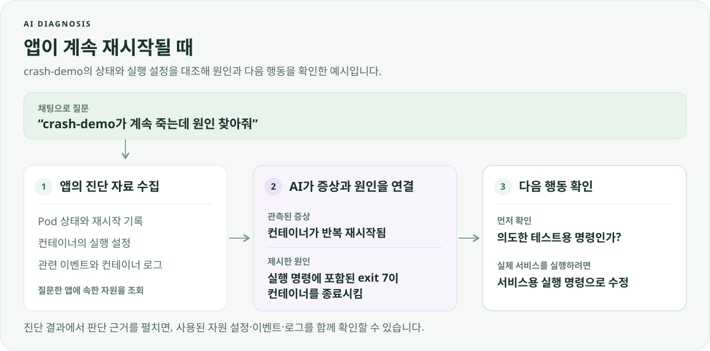
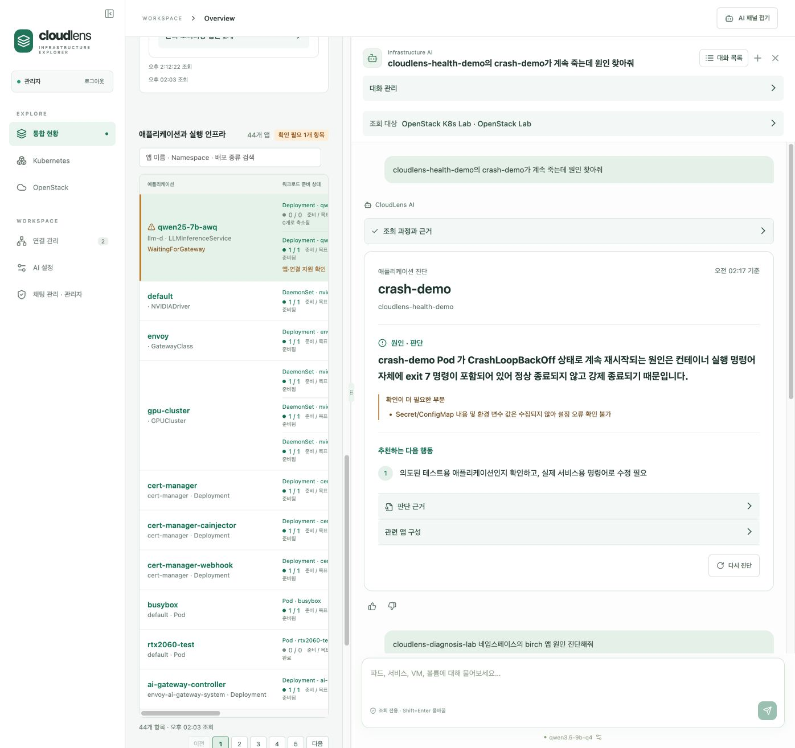
컨테이너 실행 명령의 exit 7을 반복 재시작의 원인으로 찾고, 실행 명령을 점검하는 순서를 제안한 결과입니다.
진단은 이미지 다운로드 실패, 설정 누락, 볼륨 바인딩 실패 등 원인이 다른 테스트 앱으로 검증했습니다. 같은 상태·이벤트·로그를 Qwen과 Sol에 전달해 비교하면서, 필요한 정보가 수집됐는지와 모델이 그 정보를 올바르게 해석했는지를 나누어 확인했습니다.
조회할 클러스터와 클라우드는 대화별로 선택합니다. 이전 대화를 다시 열거나 앞선 조회에 이어 조건을 바꿔 질문할 수 있습니다. 검색 결과와 진단을 검토한 뒤 실제 자원 변경은 관리 화면에서 수행합니다.
통합 현황과 앱 추적
통합 현황에서는 클러스터에 배포된 앱과 준비 상태를 한눈에 봅니다. 문제가 있는 앱을 먼저 표시해 확인할 대상을 찾기 쉽도록 했습니다. 앱을 선택하면 연결된 네트워크, 실행 워크로드, 저장소와 GPU가 구성도에 나타납니다. Deployment로 배포한 일반 앱과 KServe로 배포한 모델 서빙 앱을 같은 방식으로 살펴볼 수 있습니다.
구성도는 실제 연결에 따라 달라집니다. 외부 요청을 받는 앱에는 진입 경로가 보이고, 저장소나 GPU를 사용하는 앱에는 해당 자원이 함께 나옵니다. 예를 들어 Open WebUI에서는 요청을 받는 Gateway부터 Service, 실행을 관리하는 Deployment, 데이터를 저장하는 PVC까지 따라갈 수 있습니다.
Open WebUI의 실행 환경을 살펴본다면 먼저 통합 현황에서 앱을 선택합니다. 구성 탭에서는 요청이 들어오는 경로와 데이터를 저장하는 볼륨을 보고, 사용량 탭에서는 이 앱의 CPU·메모리 그래프를 확인합니다. 실행 머신까지 확인하려면 구성도의 Node를 선택해 연결된 VM 상세로 이동합니다. 앱 이름 하나에서 시작해 필요한 정보를 따라가는 흐름입니다.
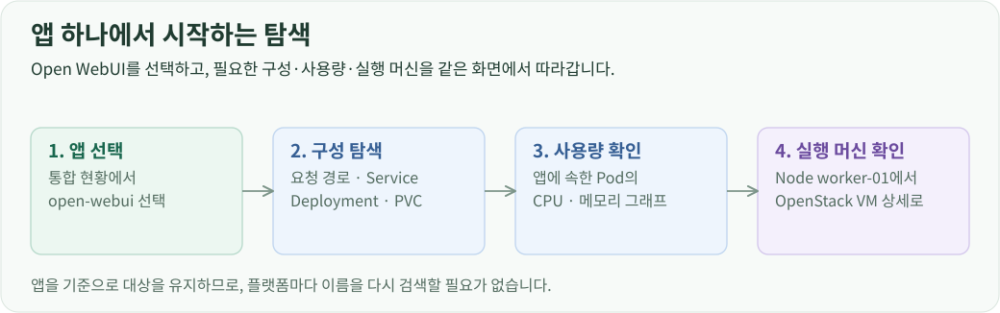
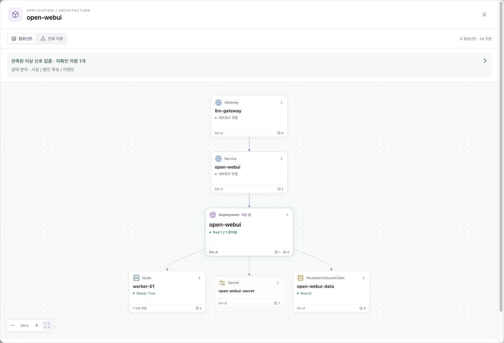
Open WebUI의 구성 화면입니다. Gateway → Service → Deployment 경로와 실행 노드, 저장소가 연결되어 보입니다.
앱의 실행 위치도 여기서 확인합니다. Pod가 배치된 노드와 그 노드에 대응하는 OpenStack VM을 연결해, 앱에서 실행 머신까지 따라갈 수 있도록 했습니다. 앱이 동작하지 않을 때 배포 설정과 실행 머신의 상태를 함께 조사할 수 있습니다.
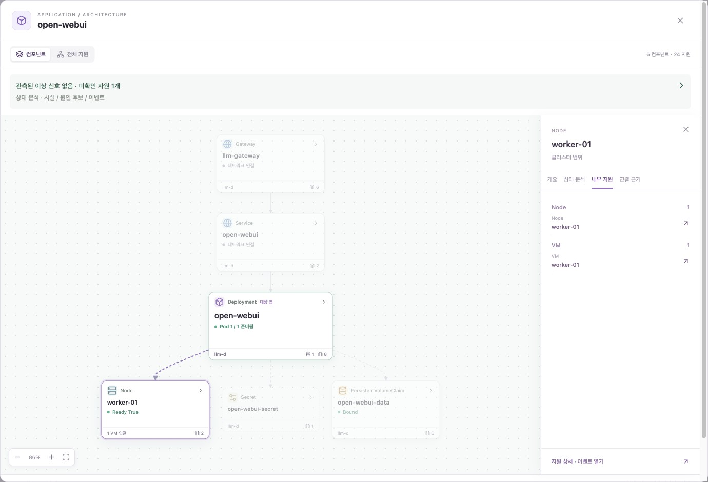
구성도에서 worker-01을 선택한 모습입니다. 오른쪽 내부 자원 목록에서 Kubernetes Node와 대응하는 OpenStack VM을 각각 열어볼 수 있습니다.
사용량·용량 대시보드
앱을 선택한 상태에서 CPU·메모리·저장소 사용량을 시간에 따라 확인합니다. 해당 앱에 속한 Pod를 기준으로 사용량을 집계하므로, 어느 앱이 자원을 소비하는지 살펴볼 수 있습니다. 개별 Pod와 컨트롤러 상세에서도 같은 대시보드를 제공합니다.
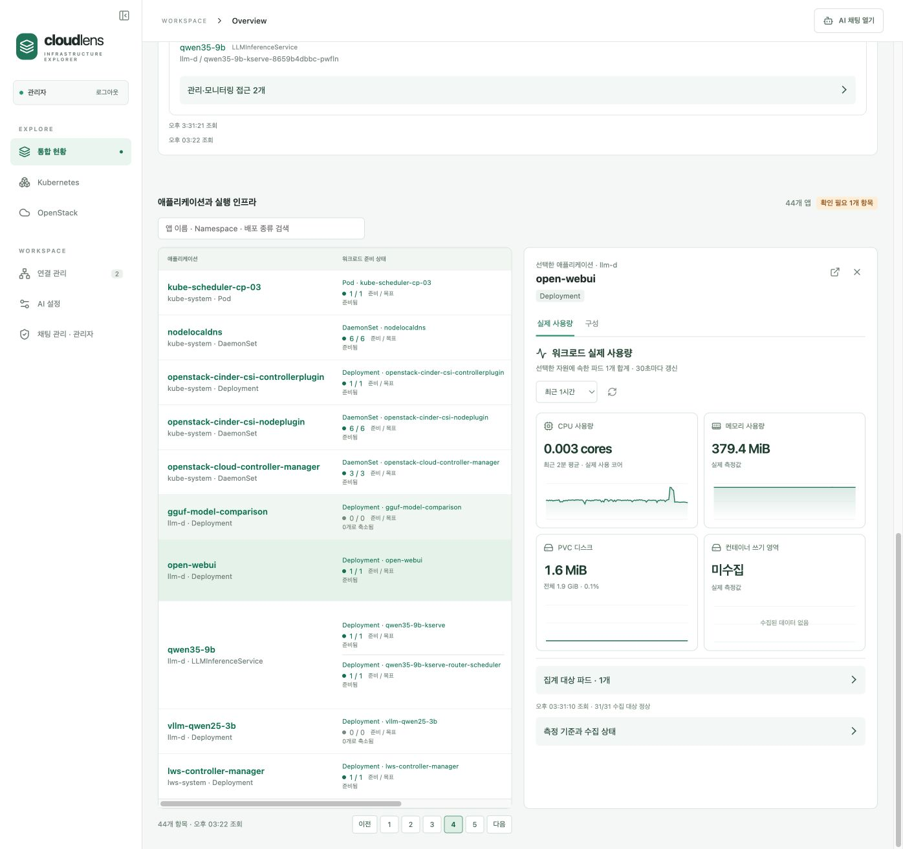
Open WebUI에 속한 Pod의 CPU·메모리와 연결된 PVC의 사용량을 시간에 따라 보여줍니다.
GPU는 카드별 사용 여부와 사용률, 메모리 사용량, 연결된 앱을 함께 보여줍니다. 모델 서빙 앱이 어느 GPU를 쓰는지와 카드의 부하를 함께 확인할 수 있습니다. 공유 GPU의 사용률은 카드 전체의 측정값으로 표시합니다.
새 앱이나 VM을 배치할 여유는 인프라 용량 화면에서 확인합니다. 호스트·저장소·노드의 할당 기준에 맞춰 여유 용량을 계산하고, OpenStack 호스트의 추가 할당 여유, Cinder 저장소의 남은 공간, Kubernetes 클러스터·노드의 Pod 요청 기준 여유를 구분해 보여줍니다. 실행 중인 앱의 부하를 보는 사용량 그래프와 자원 배치를 계획할 때 보는 용량 화면을 함께 제공합니다.
Kubernetes 자원 관리
Pod·Deployment 같은 워크로드부터 Service·스토리지·사용자 정의 자원까지 종류별로 탐색합니다. Namespace를 선택해 조회 범위를 좁히고, 목록에서 상태를 비교하거나 상세 화면에서 연결된 자원과 이벤트, YAML·JSON을 확인합니다. 앱 구성도나 채팅에서 찾은 자원도 같은 상세 화면으로 연결됩니다.
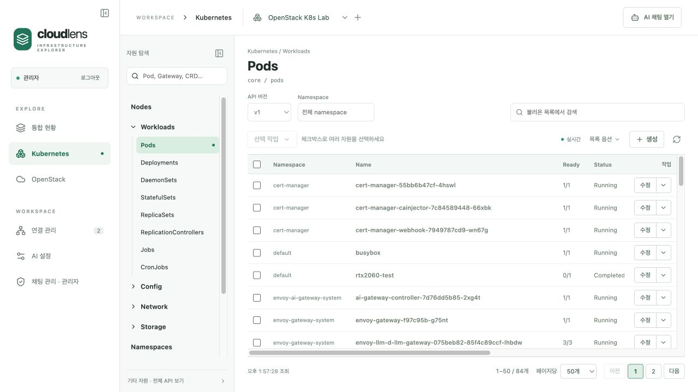
Kubernetes 탐색기에서 자원 종류와 Namespace를 선택하고, Pod의 준비 상태와 실행 상태를 확인합니다.
상세 화면의 ‘연결된 자원’ 탭에서는 해당 자원과 관계가 있는 항목을 모아 봅니다. Pod를 관리하는 ReplicaSet·Deployment, 실행 중인 Node, 참조하는 ConfigMap 등을 선택하면 그 자원의 상세 화면으로 바로 이동합니다. 이름을 복사해 다른 목록에서 다시 검색할 필요 없이, 실행 중인 Pod에서 배포 설정이나 실행 노드까지 따라갈 수 있습니다.
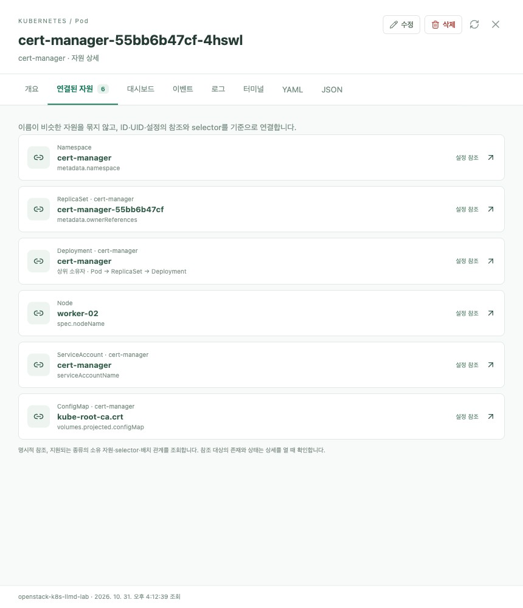
cert-manager Pod의 연결 자원 목록입니다. 각 항목에 자원 종류와 연결 관계가 표시되며, Deployment 항목을 누르면 이 Pod를 관리하는 cert-manager 배포의 상세가 열립니다.
자원을 만들거나 수정할 때는 YAML 편집기와 기본 템플릿을 사용합니다. 삭제와 지원되는 일괄 작업은 목록에서 실행하며, 자원 상태는 변경 이벤트를 받아 자동으로 갱신됩니다.
YAML을 처음부터 작성하기 어렵다면 생성 화면에서 AI에 초안 작성을 요청할 수 있습니다. 이름·이미지·포트 등 원하는 구성을 문장으로 입력하면 선택한 자원에 맞는 YAML 초안을 편집기에 채워줍니다. 사용자는 내용을 확인하고 필요한 부분을 수정한 뒤 생성합니다.
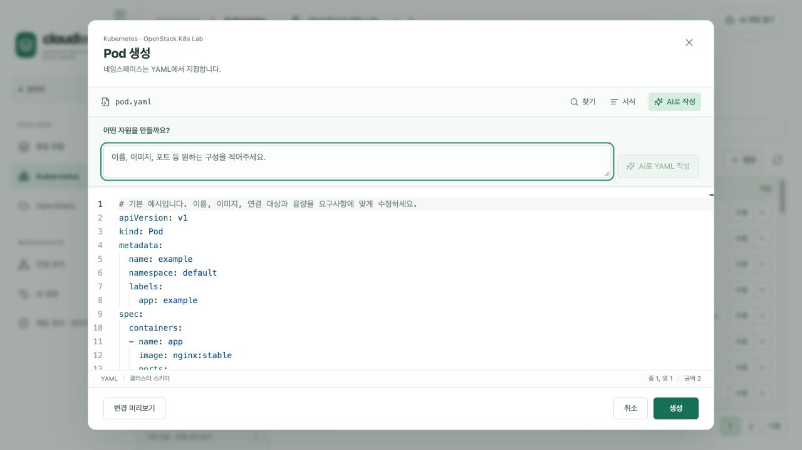
‘AI로 작성’에 요구사항을 입력하면 YAML을 작성합니다. 편집기에서 내용을 확인한 뒤 생성할 수 있습니다.
OpenStack 자원 관리
인스턴스·이미지·키 페어·볼륨·네트워크 등 클라우드 자원을 조회하고 관리합니다. 인스턴스 목록에서는 상태와 IP, Flavor를 비교하고, 상세 화면에서는 연결된 자원을 따라가며 정보를 확인합니다.
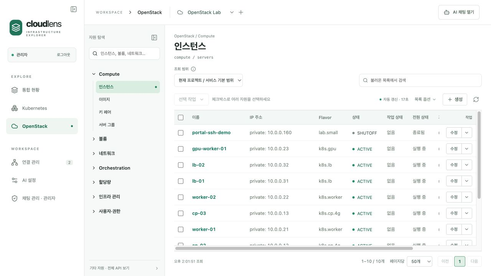
OpenStack 인스턴스의 상태를 확인하고 행별 작업이나 여러 자원을 선택한 일괄 작업을 실행합니다.
OpenStack에서도 같은 방식으로 연결을 따라갑니다. VM 상세에서 할당된 Flavor, 연결된 볼륨·네트워크 포트·보안 그룹을 확인하고, 항목을 눌러 해당 자원의 상세를 엽니다. 예를 들어 VM의 디스크를 확인하려면 연결된 볼륨을 선택해 크기와 볼륨 타입, 연결 상태를 살펴볼 수 있습니다.
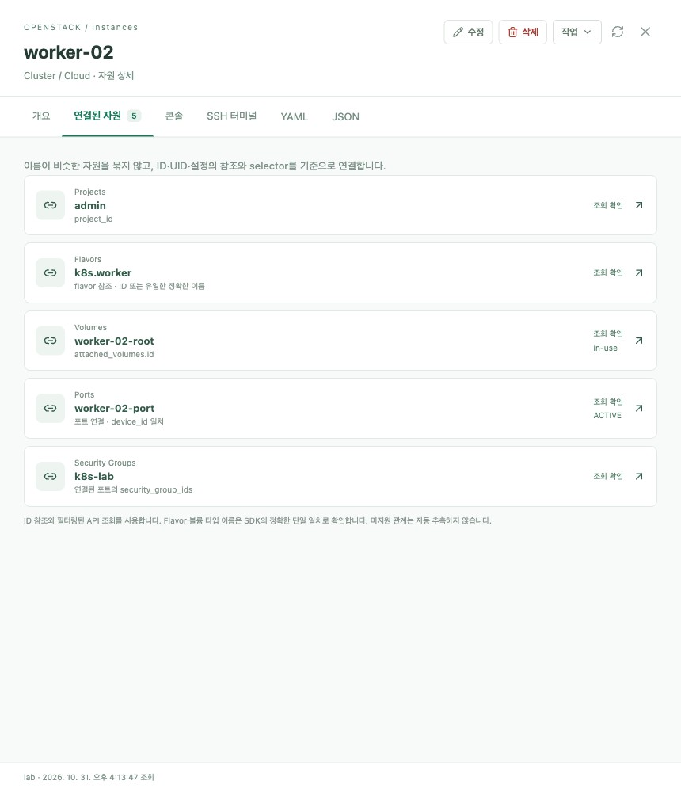
worker-02 VM의 연결 자원 목록입니다. worker-02-root를 선택하면 볼륨 상세로 이동해 크기와 연결 정보를 확인합니다.
생성·수정에는 자원별 입력 폼을 사용합니다. 예를 들어 VM을 만들 때는 이미지·Flavor·네트워크·키 페어를 선택합니다. 인스턴스 시작·정지·삭제는 작업 메뉴에서 실행하고, 여러 자원을 선택한 일괄 작업은 대상별로 접수·처리합니다. 제출 후에는 대상별 처리 결과를 보여주고, 목록을 자동 갱신해 실제 상태 변화를 반영합니다. 사용 가능한 작업은 자원 종류와 권한에 따라 달라집니다.
로그 분석과 원격 접속
자원 상세에서 컨테이너의 실시간 로그와 재시작 전 로그를 확인합니다. 로그를 직접 읽기 어려울 때는 AI 로그 분석을 요청해 확인된 사실, 원인 후보와 다음 확인 사항을 정리할 수 있습니다. 분석에 사용된 로그 줄을 함께 표시해 원문과 대조할 수 있습니다.
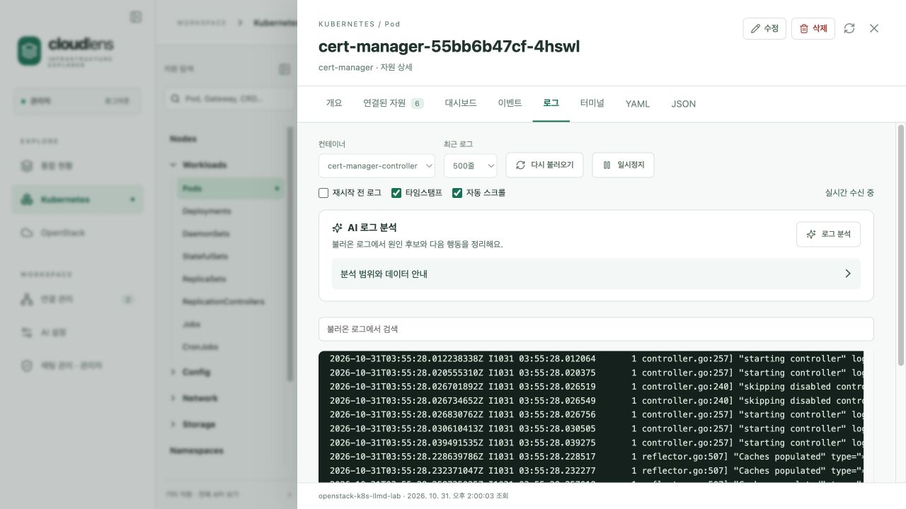
로그 열람과 AI 분석을 같은 상세 화면에서 사용합니다.
직접 조사가 필요하면 자원 상세에서 Pod 터미널이나 VM 콘솔·SSH를 엽니다. Pod 터미널은 Kubernetes exec로 컨테이너의 셸을 실행하고, VM SSH는 등록한 개인키로 앱 서버에서 VM에 접속합니다. VM 콘솔은 OpenStack이 발급한 noVNC 화면을 브라우저에서 엽니다. 각 접속 방식의 인증과 연결 경로를 구분해 구현해, 사용자는 자원을 찾은 화면에서 바로 조사할 수 있습니다.
계정과 인프라 연결 관리
회원가입·로그인 후 자신의 인프라 연결과 대화를 관리합니다. 사용할 Kubernetes 클러스터와 OpenStack 클라우드를 등록하고, 화면이나 대화에서 조회할 대상을 선택합니다. 모니터링에 사용할 Prometheus 연결도 함께 설정합니다.
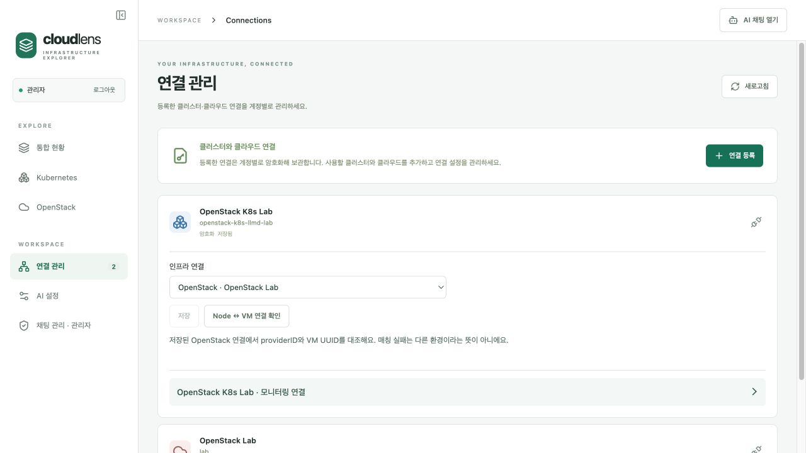
등록된 클러스터와 클라우드의 연결 설정을 관리하는 화면입니다.
클러스터가 어느 OpenStack에 배포됐는지 지정하면 앱의 실행 노드와 VM을 함께 추적할 수 있습니다. OpenStack을 사용하지 않는 클러스터도 등록해 Kubernetes 기능을 사용할 수 있습니다. 사용자별로 연결 정보와 대화를 관리하고, 실제 인프라 작업에는 등록한 연결 계정의 권한을 적용합니다.
AI 설정
채팅과 진단에 사용할 모델을 선택하고 연결을 테스트할 수 있습니다. OpenAI 호환 API와 Codex exec를 공통 모델 호출 인터페이스로 연결해 두 방식을 선택할 수 있도록 했으며, 모델의 입력·출력 한도도 설정합니다. 개발 과정에서는 Qwen을 주 사용 모델로 두고 다른 모델의 결과와 비교했습니다.
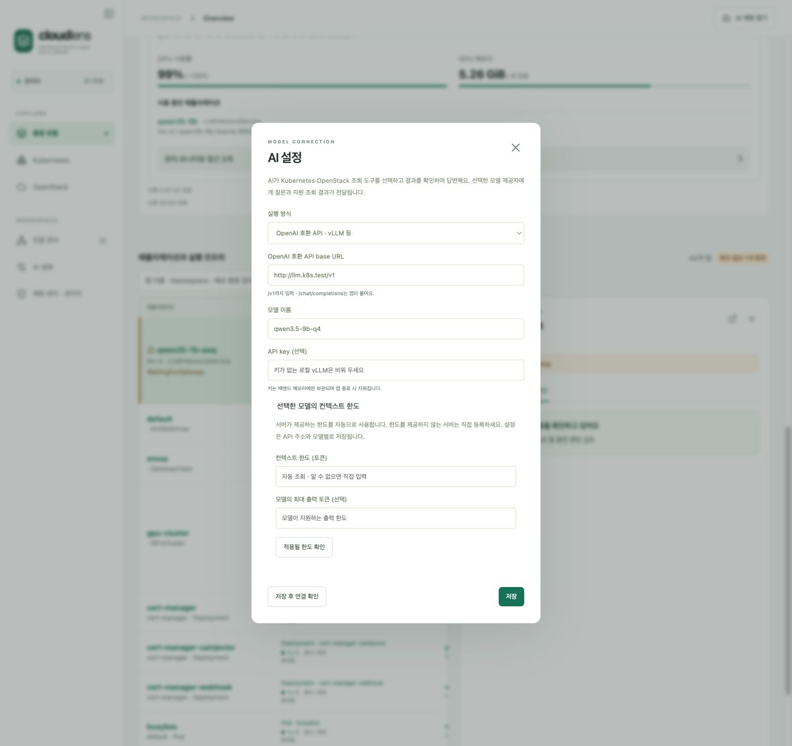
AI 설정에서 실행 방식과 모델을 지정하고, 한도와 연결 상태를 확인합니다.
AI 운영 관리
관리자는 AI 실행 관리에서 누가, 언제, 어떤 기능으로 AI를 사용했는지 확인합니다. 채팅의 자원 검색과 장애 진단뿐 아니라 통합 현황의 앱 진단, Pod 로그 분석, YAML 작성, 모델 연결 테스트도 기록합니다. 사용자·기능·모델·답변 평가로 실행을 찾아 요청 내용과 결과, 성공·실패 상태를 살펴볼 수 있습니다.
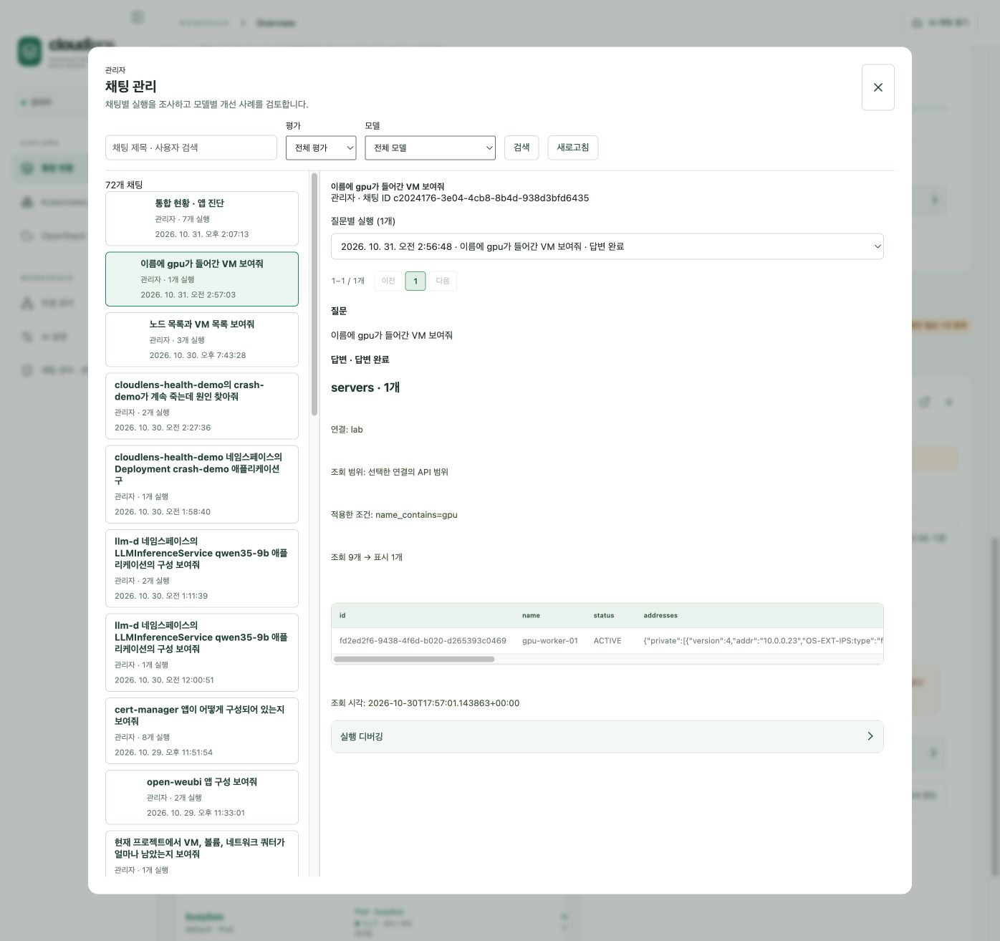
관리자 화면에서 채팅을 검색하고, 선택한 질문의 답변과 실행 디버깅을 확인합니다.
답변이 예상과 다르면 실행 기록에서 원인을 조사합니다. 모델에 전달한 입력과 도구 정의, 모델이 선택한 함수와 인자, 실제 조회 결과와 적용한 필터를 차례로 확인합니다. 예를 들어 Deployment를 요청했는데 Pod가 나왔다면, 요청을 해석할 때 대상이 바뀌었는지 도구를 선택할 때 잘못 골랐는지 확인할 수 있습니다. 모델 호출과 도구 실행을 식별자로 연결해 기록해 최종 답변에서 문제가 생긴 단계까지 거슬러 올라갑니다.
토큰 사용량에서는 기간과 사용자를 선택해 입력·출력 토큰을 각각 확인합니다. 사용자·모델별 합계와 개별 호출의 기능, 시각, 실행 상태를 함께 보여주므로 어느 사용자와 기능에서 사용량이 발생했는지 살펴볼 수 있습니다. 한 요청에서 모델을 여러 번 호출한 경우에도 호출마다 사용량을 남깁니다.
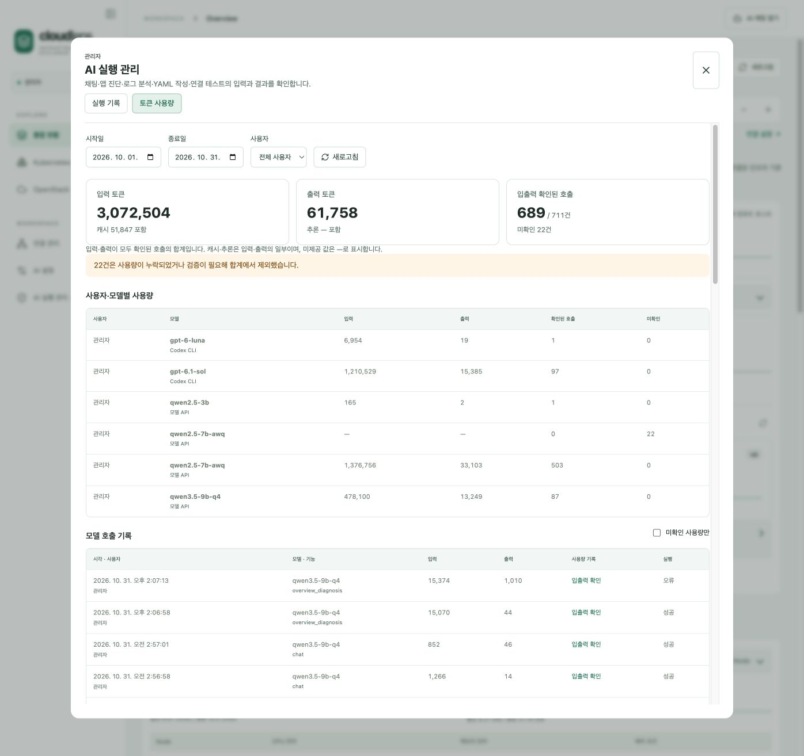
입력·출력 토큰 합계, 사용자·모델별 사용량, 기능별 호출 기록을 한 화면에서 확인합니다.
사용자는 답변에 좋아요·싫어요와 의견을 남길 수 있습니다. 관리자는 평가와 실행 기록을 함께 검토하고, 실제 모델 입력·응답과 도구 실행 결과가 담긴 사례를 JSONL로 추출해 외부에서 모델 비교나 파인튜닝 자료로 활용할 수 있습니다.
시스템 구조
React·TypeScript 화면과 FastAPI 서버로 구성했습니다. 서버는 기능별 모듈에서 조회·관계 계산·작업 실행을 처리하고, Kubernetes·OpenStack·Prometheus·모델은 각 연동 어댑터로 호출합니다. 계정과 연결 설정, 채팅과 실행 기록은 H2에 저장합니다.
개발·검증 환경에서는 포털 서버와 H2를 Mac에서 실행하고, 관리 대상 Kubernetes는 OpenStack VM 위에 구성했습니다. Prometheus와 Qwen 모델 서버는 해당 클러스터에 배포해 자원 조회·모니터링·AI 요청을 각 서비스로 연결했습니다.
이 실행 환경도 직접 구성했습니다. 물리 자원, 가상머신, 컨테이너와 모델 API를 연결한 과정은 OpenStack·Kubernetes·GPU 모델 서버 구축에서 확인할 수 있습니다.